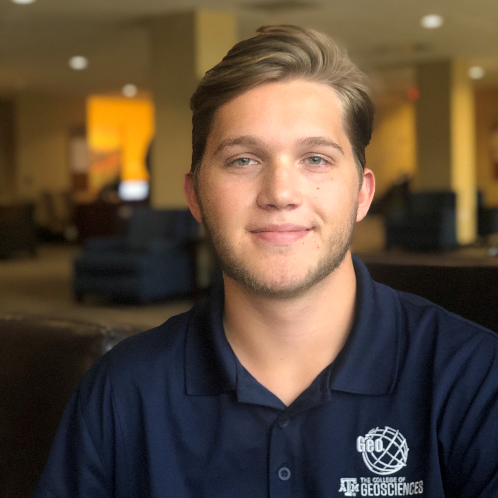

(512)-417-8752 alexstarkes@gmail.com

Texas A&M University, College Station, Texas
Pursuing a Bachelor of Science in Geographic Information Systems and Technology, Computational Design & Analysis Track ,
Pursuing a Minor in Computer Science
GPA: 3.608 Major GPA: 3.734 Expected Graduation: May 2022
Proficient in: Python | ArcPy | C++ | C | SQL | R | ArcGIS Products Suite | Microsoft Office Suite | SolidWorks | ENVI |
Familiar with: VBA | Javascript | HTML | Haskell | Java | AutoCAD | FME | QGIS | AutoCAD 3D Civil | Linux |
Tudor, Pickering, Holt & Co. June 2021 - August 2021
Summer GIS Analyst
Texas A&M Bush School Graduate Capstone March 2021 - April 2021
Cartographic Productions
ConocoPhillips May 2020 - August 2020
Land GIS Intern
RESPEC Inc. June 2018 - August 2018
Technical Intern
GEOx Summer Camp June 2019
Counselor